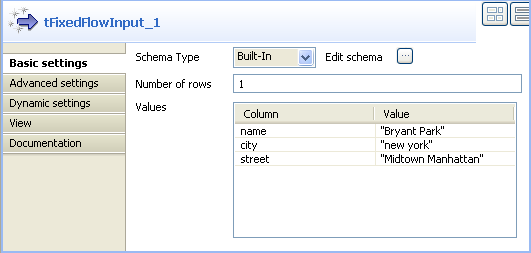
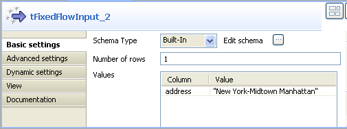

|
Component family |
Business/ Microsoft AX | ||||
|
Function |
tMSAXOutput connects to a MicrosoftAX server. | ||||
|
Purpose |
This component allows to write data in a MicrosoftAX server. | ||||
|
Basic settings |
Property type |
Either Built-in or Repository. | |||
|
|
|
Built-in: No property data stored centrally. | |||
|
|
|
Repository: Select the Repository file where properties are stored. The fields that come after are pre-filled in using the fetched data. | |||
|
|
Host |
Type in the IP address of the MicrosoftAX server. | |||
|
|
Domain |
Type in the domain name on which the MicrosoftAX server is hosted. | |||
|
|
Username and Password |
Type in user authentication data. | |||
|
|
Table Name |
Name of the table you want to connect to and write/modify data in. | |||
|
|
Action on data |
You can do any of the following operations on the data in a MicrosoftAX server: Insert: insert data. Update: update data. Insert or update: add data or update existing one. Update or insert: update existing data or create it if it does not exist. Delete: delete data. | |||
|
|
Schema and Edit Schema |
A schema is a row description, i.e., it defines the number of fields that will be processed and passed on to the next component. The schema is either built-in or remote in the Repository. Click Edit Schema to make changes to the schema.
| |||
|
|
Die on error |
This check box is selected by default. Clear the check box to skip the row on error and complete the process for error-free rows. If needed, you can retrieve the rows on error via a Row > Rejects link. | |||
|
|
Additional Columns |
This option allows you to use Local expressions to perform actions on columns. For example, you can alter values in columns of the defined table. When you update or delete data in a column, this option provides you with other possibilities on WHERE statements through using different operators from the Operator column. Name: name of the schema column to be altered or inserted as a new column. Operator: select in the list the operator you want to use with the WHERE statement.
Data type: type of data. Local expression: Type in the Local statement to be executed in order to alter or insert the relevant column data, for example row1.[row name]. Or, press Ctrl + Space and select any of the context variables available in the list. Position: select in the list Before, After or Replace following the action you want to perform on the reference column. Reference column: type in a column of reference that the component can use to place/replace the new/ altered column. | |||
|
Advanced settings |
tStatCatcher Statistics |
Select this check box to gather the Job processing metadata at a Job level as well as at each component level. | |||
|
Usage |
This component is used as an output component. An Input component is required. | ||||
|
Limitation |
n/a | ||||
Before being able to use this component, make sure that you install and launch the MicrosoftAX server correctly. |
This Java scenario describes a two-component Job that uses tMSAXOutput to insert four columns in a defined table in a MicrosoftAX server after it alters values in one of the inserted columns.
 |
Drop tFixedFlowInput and tMSAXOutput from the Palette to the design workspace.
onnect the two components together using a Row Main link.
Double click tFixedFlowInput to display its Basic settings view and define the component properties.
|  |
Set Schema type to Built-in and click the three-dot button next to Edit schema to display a dialog box where you can define the input schema.
Click the plus button and add the input schema columns, three in this example: name, city and street.
Click OK to close the dialog box and accept propagating the changes when prompted by the system.
The three schema columns display automatically in the Values list.
Click in the Value column and enter a value for each of the input columns.
Double-click tMSAXOutput to open its Basic settings view and define the component properties.
 |
Set Property type to Built-in.
In the Host field, type in the IP address of the MicrosoftAX server.
In the Domain field, type in the domain name on which the MicrosoftAX server is hosted.
Enter your username and password for the server in the corresponding fields.
In the Table Name field, enter the name of the table you want to write data in, ADDRESS in this example.
In the Action on data list, select the action you want to carry on, Insert in this example.
Click Sync columns to retrieve the schema from the preceding component.
In this example, we want to retrieve the three input columns: name, city and street and write the data included in the three input columns in the microsoftAX server without any changes.
If needed, click the three-dot button next to Edit Schema to verify the retrieved schema.
In the Additional columns list, click the plus button to add one line where you can define parameters for the new column to add to the row you want to write in the ADDRESS table.
Set a name, a data type, a position and a reference column in the corresponding columns for the line you added.
In this example, we want to add a new column we call “address” after the street column.
Click in the Local expression column and press Ctrl + space on your keyboard to open the context variable list and select:
StringHandling.UPCASE(row2.city)+"-"+row2.street. This expression will write the city name initially capped followed by the street name to form the address of Bryant park. Thus the address column in this example will contain the string: New York-Midtown Manhattan.Save your Job and press F6 to execute it.
tMSAXOutput inserts in the ADDRESS table in the MicrosoftAX server a row that holds the three input columns, name, city and street in addition to the new address column that combines the city name and the street name.
Before being able to use this component, make sure that you install and launch the MicrosoftAX server correctly. |
This Java scenario describes a two-component Job that uses tMSAXOutput to delete from a defined table in a MicrosoftAX server all rows that do not match the data included in a key column.
In this example, the input schema we use is an address column that holds the following data: New York-Midtown Manhattan. We want to delete from the MicrosoftAX server all addresses that are not identical with this one.
 |
Drop tFixedFlowInput and tMSAXOutput from the Palette to the design workspace.
Connect the two components together using a Row Main link.
Double click tFixedFlowInput to display its Basic settings view and define the component properties.
|  |
Set Schema type to Built-in and click the three-dot button next to Edit schema to display a dialog box where you can define the input schema.
Click the plus button and add the input schema columns, address in this example.
Click OK to close the dialog box. The schema column displays automatically in the Values list.
Click in the Value column and enter a value for the input column.
Double-click tMSAXOutput to open its Basic settings view and define the component properties.
 |
Set Property type to Built-in.
In the Host field, type in the IP address of the MicrosoftAX server.
In the Domain field, type in the domain name on which the MicrosoftAX server is hosted.
Enter your username and password for the server in the corresponding fields.
In the Table Name field, enter the name of the table you want to delete data from, ADDRESS in this example.
In the Action on data list, select the action you want to carry on, Delete in this example.
Click Sync columns to retrieve the schema from the preceding component. In this example, we want to retrieve the input column: address.
Click the three-dot button next to Edit Schema to open a dialog box where you can verify the retrieved schema.
 |
In the output schema, select the Key check box next to the column name you want to define as a key column.
When you select Delete as an action on data, you must always define the Reference column as a key column in order for tMSAXOutput to delete rows based on this key column. |
Click OK to validate your changes and close the dialog box.
In the Additional columns list, click the plus button to add one line and define the parameters the component will use as basis for the delete operation.
Set a name, an operator, a data type, a local expression, a position and a reference column in the corresponding columns for the line you added.
In this example, we want to delete from the ADDRESS table in the MicrosoftAX server all rows in which the address column is not equal to the address in the key address column and that reads as the following:
New York-Midtown Manhattan
.
When you select Delete as an action on data, you must always set Position to Replace. Otherwise, all settings in the Additional columns will not be taken into account when executing your Job. |
Save your Job and press F6 to execute it.
tMSAXOutput deletes from the ADDRESS table in the MicrosoftAX server all rows where the address string is not equal to the address in the key column.